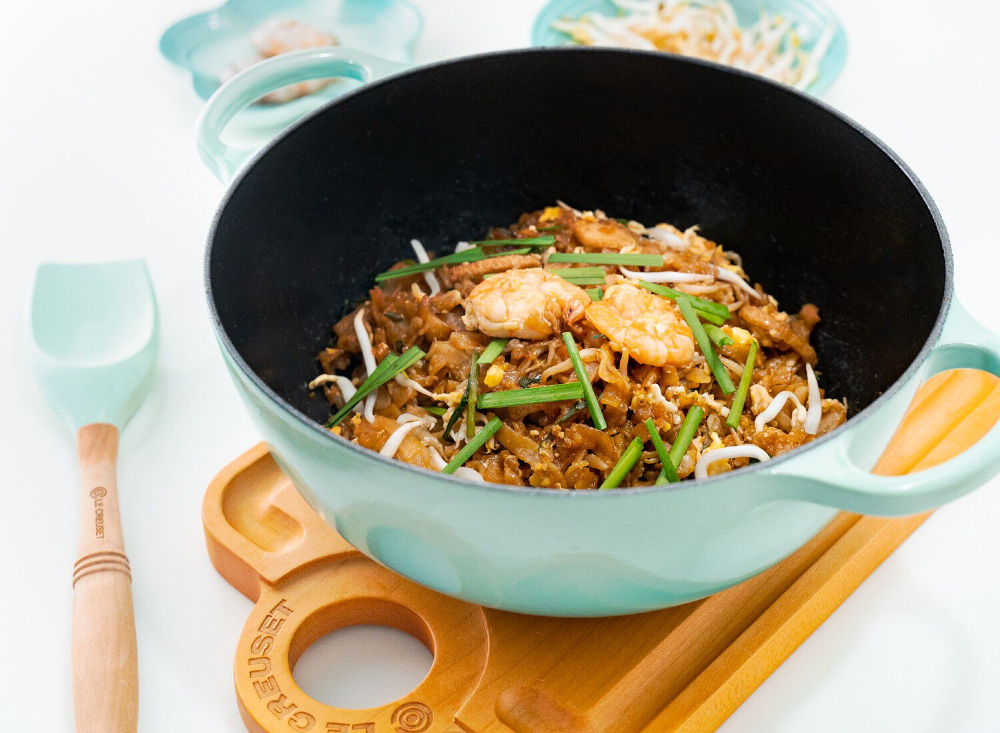

Home
Char Kuey Teow

Description
Rendang Tok is a rich, dark, and dry traditional beef rendang from Perak, Malaysia.
Ingredients
- 500g Thin Kuey Teow, rinsed with warm water
- 2 pieces Fish Cakes, sliced
- 1 packet Bean Sprouts, rinsed
- 3 tbsp Sweet Radish
- 1 bunch Chinese Chives
- 3 Eggs
- 3 cloves, Garlic, chopped
- Prawns or Cockles (optional)
- 1-2 Chinese Sausage, sliced diagonally (optional)
- 1/4 cup Vegetable Oil
Sauce Mix:
- 5 tbsp Soy Sauce
- 2 tbsp Dark Soy Sauce
- 1 tbsp Oyster Sauce
- 1 tsp Sugar
- Dashes, White Pepper
- 1 tbsp Fish Sauce
Steps
- In a bowl, mix all ingredients listed in Sauce Mix.
- In a Marmite Stir-Fry Pot, pour in vegetable oil and turn to medium heat. Sauté fish cakes, sweet radish, and Chinese sausage/prawns/cockles*. Add in garlic and fry until fragrant.
- Toss in Kuey Teow and quickly stir-fry while you add 2-3 tbsp of the sauce mix.
- Finally, add bean sprouts and Chinese chives.
- Push the Kuey Teow aside, add a little bit of oil, then crack an egg. Break the yolk with a spatula and immediately flip the noodles over, covering the egg.
- Stir-fry until egg and noodles are cooked.
- Pour in the remaining sauce mix or season it to taste.
*Prawn/Cockles/Chinese Sausage can be replaced depending on dietary/halal requirements
Tips :
Heat the oil over medium heat until a wave of smoke is observed. This indicates that it is heated enough and ready for cooking.